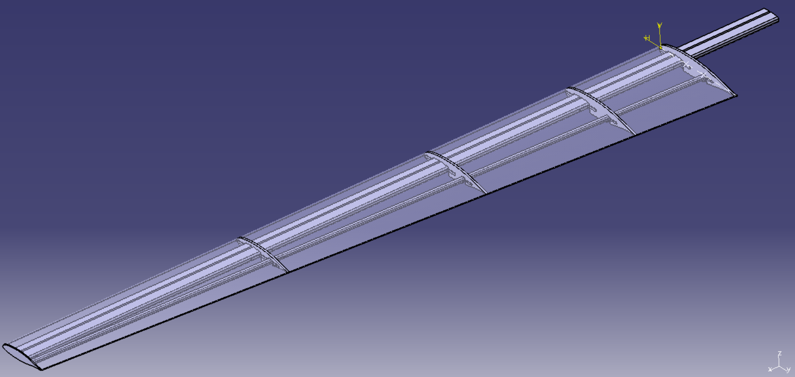
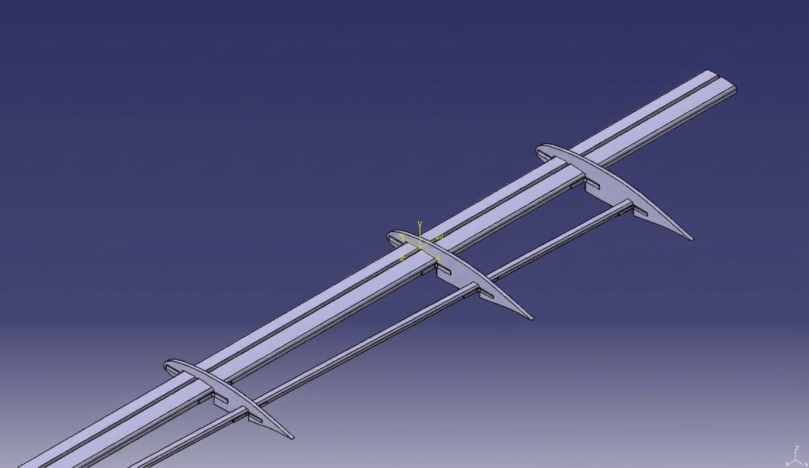
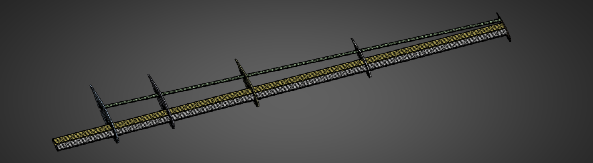
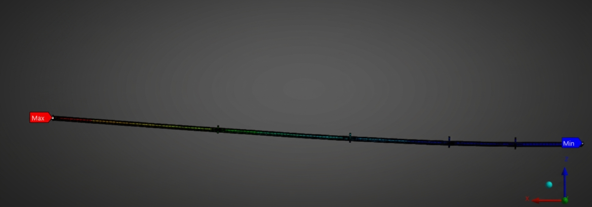

MSc Thesis Internship · Leonardo S.p.A. · Aerostructures Business Unit · Grottaglie (TA) · 2025–2026
UAV Wing Design & Structural Validation
Design and structural validation of an ISR–UAV wing and its fuselage junction system: CATIA V5 modelling, analytical aerodynamic load estimation, static FEA and safe-life fatigue assessment in Ansys, completed by an FDM-printed prototype of the junction.
Overview
The project was developed as MSc thesis work within Leonardo S.p.A.'s AeroTech Academy programme, at the Aerostructures Business Unit in Grottaglie. The requirement was to design, structurally validate and prototype an ISR–UAV wing together with its fuselage junction system, integrating analytical load estimation,material selection, numerical validation and additive manufacturing.
The scope covered the complete 3D CAD modelling of the wing's internal structure, the analytical estimation of the aerodynamic loads in steady flight, the engineering of the wing–fuselage Coupling System, the structural validation of the assembly by FEA, and the subsequent safe-life fatigue assessment of the wing structure.
Approach
- Imported the reference airfoil geometry from AirfoilTools into CATIA V5 and modelled the complete internal structural architecture: spars, ribs and L/U-shaped connectors.
- Estimated the aerodynamic load distribution for steady, level flight and executed the static structural FEA in Ansys on the wing–fuselage configuration under limit load conditions.
- Performed the fatigue analysis in Ansys on the wing–fuselage configuration under the GAG (Ground–Air–Ground) load cycle, rescaling the static solution to each flight phase.
- Manufactured the fuselage junction via FDM 3D printing for rapid prototyping and physical assembly checks.
Fatigue Assessment
The fatigue verification was carried out following a safe-life approach.
From the mission profile (flight profile, duration and target number of missions), the load spectrum was derived through the GAG (Ground–Air–Ground) cycle, which rescales the static solution to each flight phase.
Fatigue strength is described by S–N curves (stress vs. cycles), while the damage accumulated per mission is computed with the Palmgren–Miner rule. Considering the number of critical cycles per mission, the damage contribution Di of each flight phase was calculated, from which the total damage per mission was obtained; entered into the Palmgren–Miner formula, it returns an estimate of the fatigue life (~10.000 missions).
The analysis therefore demonstrated the capability of the system to withstand fatigue loading for the defined number of missions.
Results
- Delivered a fully parameterized, structurally validated virtual prototype of the UAV wing.
- Confirmed the static structural validity of the final configuration under limit load: maximum total a deformation of 1.25% of the wing span.
- Principal and transverse stresses remained below the yield strength limits of the materials employed in the different zones of the structure, with a minimum margin of ~60%.
- Demonstrated, through the safe-life analysis, the capability of the structure to withstand fatigue loading for the target of more than 10.000 missions.
- Produced a physical FDM-printed junction, consistent with the CAD envelope.
- Closed the design loop between analytical load estimation, CAE validation and additive manufacturing.
Quantitative performance figures are omitted, as they are subject to confidentiality; the fields in square brackets are placeholders for publishable, normalised values.
Skills
Gallery



